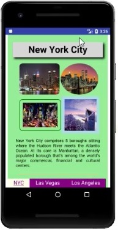
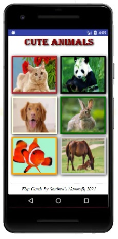

Class Activity 1: basic HTML
Class Activity 1: basic HTML
Class Activity 2: links and navigation tabs
 Class Activity 3: CSS essentials
Class Activity 3: CSS essentials

Class Activity 4: navigation tabs, icons, and symbols
 Class Activity 5: image manipulation
Class Activity 5: image manipulation
Class Activity 6: mobile app animation
Class Activity 7: modal window
Class Activity 8: mobile app slideshow

Class Activity 9: mobile flip cards
Class Activity 10: mobile app collapsible and accordions